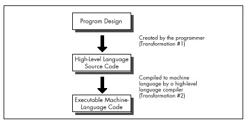

Figure 2.2 Properly constructed assembly programs suffer no transformation loss.
| Previous | Table of Contents | Next |
No matter how well an implementation is derived from the corresponding design, however, high-level languages like C/C++ and Pascal inevitably introduce additional transformation inefficiencies, as shown in Figure 2.1.
The process of turning a design into executable code by way of a high-level language involves two transformations: one performed by the programmer to generate source code, and another performed by the compiler to turn source code into machine language instructions. Consequently, the machine language code generated by compilers is usually less than optimal given the requirements of the original design.
High-level languages provide artificial environments that lend themselves relatively well to human programming skills, in order to ease the transition from design to implementation. The price for this ease of implementation is a considerable loss of efficiency in transforming source code into machine language. This is particularly true given that the x86 family in real and 16-bit protected mode, with its specialized memory-addressing instructions and segmented memory architecture, does not lend itself particularly well to compiler design. Even the 32-bit mode of the 386 and its successors, with their more powerful addressing modes, offer fewer registers than compilers would like.

Figure 2.1 The high-level language transformation inefficiencies.
Assembly, on the other hand, is simply a human-oriented representation of machine language. As a result, assembly provides a difficult programming environment—the bare hardware and systems software of the computer—but properly constructed assembly programs suffer no transformation loss, as shown in Figure 2.2.
Only one transformation is required when creating an assembler program, and that single transformation is completely under the programmer’s control. Assemblers perform no transformation from source code to machine language; instead, they merely map assembler instructions to machine language instructions on a one-to-one basis. As a result, the programmer is able to produce machine language code that’s precisely tailored to the needs of each task a given application requires.
Figure 2.2 Properly constructed assembly programs suffer no transformation loss.
The key, of course, is the programmer, since in assembly the programmer must essentially perform the transformation from the application specification to machine language entirely on his or her own. (The assembler merely handles the direct translation from assembly to machine language.)
The first part of assembly language optimization, then, is self. An assembler is nothing more than a tool to let you design machine-language programs without having to think in hexadecimal codes. So assembly language programmers—unlike all other programmers—must take full responsibility for the quality of their code. Since assemblers provide little help at any level higher than the generation of machine language, the assembly programmer must be capable both of coding any programming construct directly and of controlling the PC at the lowest practical level—the operating system, the BIOS, even the hardware where necessary. High-level languages handle most of this transparently to the programmer, but in assembly everything is fair—and necessary—game, which brings us to another aspect of assembly optimization: knowledge.
In the PC world, you can never have enough knowledge, and every item you add to your store will make your programs better. Thorough familiarity with both the operating system APIs and BIOS interfaces is important; since those interfaces are well-documented and reasonably straightforward, my advice is to get a good book or two and bring yourself up to speed. Similarly, familiarity with the PC hardware is required. While that topic covers a lot of ground—display adapters, keyboards, serial ports, printer ports, timer and DMA channels, memory organization, and more—most of the hardware is well-documented, and articles about programming major hardware components appear frequently in the literature, so this sort of knowledge can be acquired readily enough.
The single most critical aspect of the hardware, and the one about which it is hardest to learn, is the CPU. The x86 family CPUs have a complex, irregular instruction set, and, unlike most processors, they are neither straightforward nor wellregarding true code performance. What’s more, assembly is so difficult to learn that most articles and books that present assembly code settle for code that just works, rather than code that pushes the CPU to its limits. In fact, since most articles and books are written for inexperienced assembly programmers, there is very little information of any sort available about how to generate high-quality assembly code for the x86 family CPUs. As a result, knowledge about programming them effectively is by far the hardest knowledge to gather. A good portion of this book is devoted to seeking out such knowledge.
 | Be forewarned, though: No matter how much you learn about programming the PC in assembly, there’s always more to discover. |
| Previous | Table of Contents | Next |